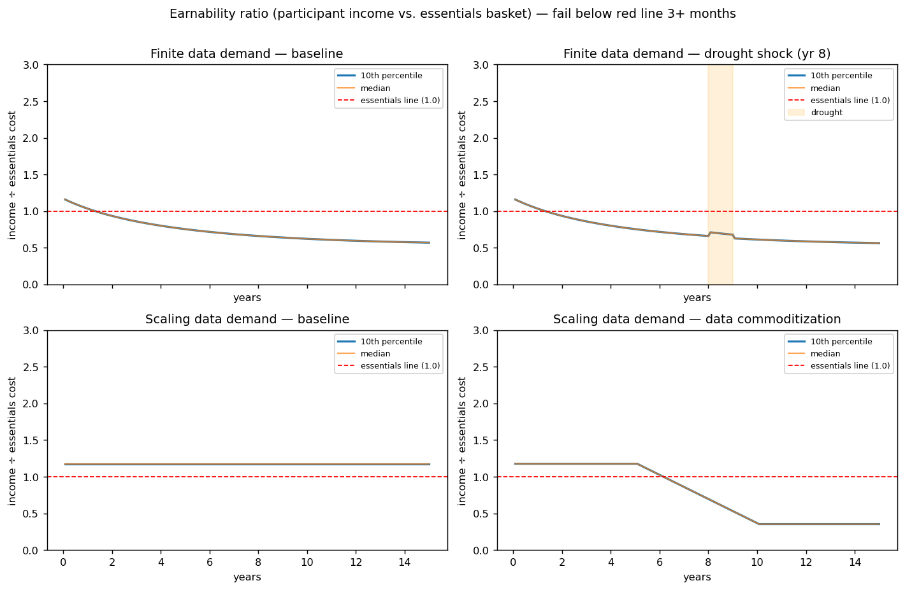
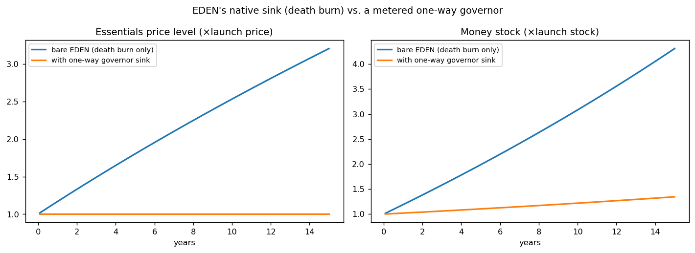
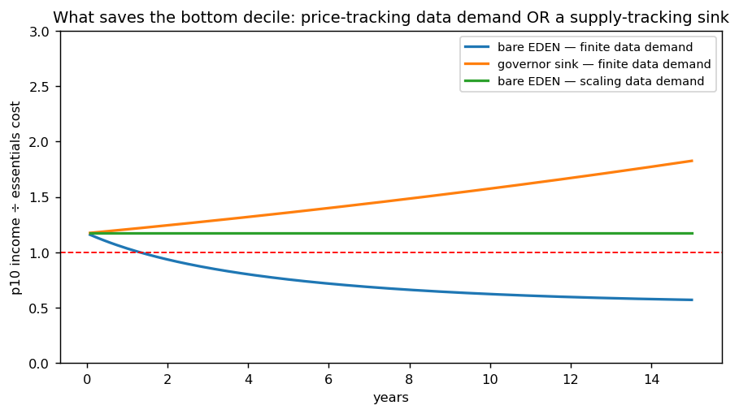
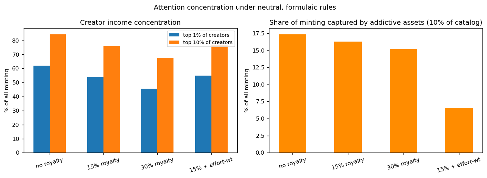

In plain language
Companion to RESULTS - EVE Sim v1. Companion added July 11, 2026 — the v1–v5-era runs predate the plain-language convention; written from the committed RESULTS as it stands today (including any verification-pass corrections already applied in that file), with no reinterpretation.
The question
Take EDEN's economy exactly as first described — 1 EVE minted per hour someone engages with your work, money leaving circulation only at death, 15% royalties flowing upstream — and run it for 100,000 simulated people over 15 years. The failure bar was agreed before running: if the 10th-percentile person's income sits below the cost of essentials for 3+ consecutive months, the bare design needs a patch. The run was generous to EDEN — no fraud modeled, and the poorest decile starts 18% above essentials.
What we found
The bare design failed most of the board. With pessimistic ("finite") data demand it went underwater at month 16 in the baseline and never recovered, and it failed the drought, commoditization, and automation scenarios too. With optimistic ("scaling") demand it passed — except data commoditization, which failed under both assumptions. The mechanism: prices grow with the money stock (~15–20%/yr early on) while data income grows ~3%/yr, and how much money is spent on data (swept from 3% to 40%) made no difference to failure timing — only whether demand is structurally tied to the price level matters. The death burn is real but decades too slow to stabilize anything on a human timescale. Two more findings: the top 1% of creators captured 62% of all minting, and addictive assets (10% of the catalog) captured 17.4% — a formulaic effort-weight (passive engagement minting at 0.3×) cut that to 6.5% with zero content judgment.
The fix that worked
A one-way, formulaic governor sink — burn whatever net issuance exceeds essentials supply growth, no committee, no fund, no discretion — kept prices flat and the bottom decile above water in every scenario tested, even under pessimistic finite data demand. It is the same kind of neutral rule as "1 hour = 1 EVE," and it was the single highest-leverage addition found.
The honest catch
The bare design's failure depends on monetary assumptions nobody controls. With softer price pass-through and a large launch money stock (60+ months of minting), bare EDEN survives the full 15 years; with a small stock (24 months) it fails by month 5–13 even then. So the claim is not "bare EDEN certainly fails" — it is that bare EDEN's survival depends on parameters nobody controls, while the governor makes it robust across all of them. A design that needs luck is a design that needs a patch. Also unmodeled: savings, fraud, adoption dynamics, population growth; prices follow simple quantity theory.
One line
Run honestly for 15 simulated years, the bare EVE design fails whenever data demand doesn't keep pace with prices — but one neutral, committee-free governor rule makes it pass every scenario tested, so the design doesn't need luck, it needs that patch.
Words used here (added July 18, 2026 — plain-language house rule; the text above is unchanged). Minting — creating brand-new EVE (the currency); here one hour of someone engaging with your work creates 1 EVE. Money stock — all the money in existence at a given moment. Issuance — the flow of newly created money entering the economy. Burn — permanently destroying money, removing it from circulation for good. 10th percentile / decile — the person poorer than 90% of people / any 10%-wide slice of the population (the poorest decile is the bottom 10%); the test watches whether they can afford essentials. Governor (sink) — an automatic rule that works like an engine's speed limiter: when money creation outruns the growth of essentials supply, it burns the excess by formula — no committee, no fund, no discretion. Effort-weight — a multiplier that pays active engagement in full and passive consumption at a fraction (0.3× here), so mindless scrolling mints less. Quantity theory — the simple pricing rule used here: more money chasing the same goods means proportionally higher prices. Commoditization — data becoming an interchangeable bulk good, so its price collapses — the way generic flour undercuts any brand. Upstream royalties — the 15% slice of earnings that flows back to the earlier works an asset was built on.
Figures




Technical results
100,000 simulated people, 15 years, monthly steps. All code, parameters, and raw outputs in this folder. Every parameter is explicit in eve_sim_v1.py — this model is meant to be argued with, not believed.
Pre-registered failure criterion (agreed before running)
If the 10th-percentile participant's monthly income falls below the cost of the essentials basket for 3+ consecutive months in any plausible scenario, the bare design needs a patch.
Design implemented (per Devan's mechanics)
Owner-only minting (1 EVE per engagement-hour, paid to asset owner; engagers earn nothing from consuming). Bounded time-based issuance. Death burn as the only native sink. 15% dependency royalties flowing upstream. One-device-per-ID assumed perfectly enforced (no fraud modeled — generous to EDEN). 95% of people share data; non-creators' income comes from data sharing. Launch is calibrated generously: prices set so the 10th-percentile person starts with an 18% margin above essentials.
The contested parameter — data demand — was swept both ways as agreed: finite (buyers spend a fixed share β of network income on data) vs. scaling (demand keeps pace with prices in real terms).
Verdicts
| Scenario | Finite data demand | Scaling data demand |
|---|---|---|
| Baseline | FAIL — underwater from month 16, never recovers | PASS — ratio stable ~1.18 |
| Drought shock (yr 8) | FAIL (already underwater) | PASS — dips, stays above 1.0 |
| Data commoditization (real value −70%, yrs 5–10) | FAIL | FAIL — underwater from yr ~6 |
| Automation tailwind (4%/yr supply) | FAIL — month 20 | PASS |
| Baseline + one-way governor sink | PASS | PASS |
The five key findings
1. The level of data spending doesn't matter — only its growth linkage does. The β sweep (3% → 40% of all network income spent on data) produced identical failure timing. Because launch prices calibrate to incomes, a richer data market just sets a higher starting price; what kills the bottom decile is that nominal data income grows ~3%/yr while prices grow with the money stock (~15–20%/yr early on). "People can always earn by sharing more data" is true; it just doesn't keep pace unless data demand is structurally tied to the price level.
2. The death burn is real but decades too slow. With minting tied to time and death as the only sink, the money stock grows toward ~80 years' worth of monthly minting before burn balances mint. Under quantity-theory assumptions that's persistent double-digit essentials inflation for decades. This quantifies the "burns are lumpy and lagged" concern: the legacy mechanism is a good long-run stabilizer and a non-stabilizer on any human timescale.
3. The one-way governor fixes it — and it's the cheapest possible patch. A purely formulaic rule (burn whatever net issuance exceeds essentials supply growth; no committee, no fund, no discretion) keeps prices flat and the bottom decile above water in every scenario tested, even with pessimistic finite data demand. This is the single highest-leverage addition to the design.
4. A real hedge exists in EDEN's favor. During the drought + engagement boom, finite-mode data income actually rose slightly (data income is a share of minting, and minting boomed). Income tied to network activity partially self-hedges against engagement-driven inflation. The direction of this effect supports Devan's intuition; its magnitude is just far too small to outrun stock-driven price growth alone.
5. Attention concentration is severe, and the neutral fix works. With real-world engagement power laws, the top 1% of creators capture 62% of all minting (84% to the top 10%). Royalties flatten this modestly (62% → 54% at 15%, → 46% at 30%). Addictive assets (10% of the catalog) capture 17.4% of all minting; adding a formulaic effort-weight (passive engagement mints at 0.3×) cuts that to 6.5% with zero content judgment — exactly as agenda-free as the base rule. The "data will self-correct" mechanism was not modeled because 15 years of platform evidence shows engagement rising despite documented harm; anyone disputing this should propose the disengagement function and we'll add it.
Sensitivity — where the result softens (honesty section)
The bare-design failure depends on monetary assumptions. With softer pass-through of money growth to essentials prices (φ=0.5 instead of 1.0) and a larger launch money stock (60+ months of minting), bare EDEN survives the full 15 years. With a small launch stock (24 months), it fails by month 5–13 even at φ=0.5. So the claim is not "bare EDEN certainly fails" — it's "bare EDEN's survival depends on monetary parameters nobody controls, while the governor makes it robust across all of them." A design that needs luck is a design that needs a patch.
What this means in one paragraph
The simulation confirms the conditional structure of the earlier debate. Devan's claim — universal permissionless earnability dissolves the necessities problem — holds if and only if data demand tracks the price level, and fails under data commoditization regardless. But the dependency on that assumption is removable: a one-way, formulaic, committee-free governor sink makes earnability robust under every tested assumption, including the pessimistic ones. The governor is not a concession to central planning; it is the same kind of neutral rule as "1 hour = 1 EVE." Likewise, effort-weighting is not an editorial agenda; it is a taper as formulaic as the mint rule, and it cuts addictive capture by ~63%.
Limitations (v1)
Quantity-theory price formation with fixed velocity; no individual savings buffers (people live on income flow — conservative for the poor, who have least savings anyway); uniform data income across sharers (reality is heterogeneous — would make p10 worse); no population growth or adoption dynamics; no fraud (generous); no physical-realm earnings (premium human services would help skilled workers, not the bottom decile); single 15-year horizon. v2 candidates: heterogeneous data value, adoption-phase dynamics, savings, an explicit disengagement-from-harm function to test the self-correction hypothesis, governance/capture dynamics.
Files
eve_sim_v1.py— full model, rerunnable, all parameters at topfig1_earnability.png— the core result, four panelsfig2_price_money.png— death burn vs. governor: price level and money stockfig3_what_saves_p10.png— the three survival paths comparedfig4_concentration.png— creator concentration and addictive captureresults.json— all verdicts, sweeps, sensitivity runs
Raw data